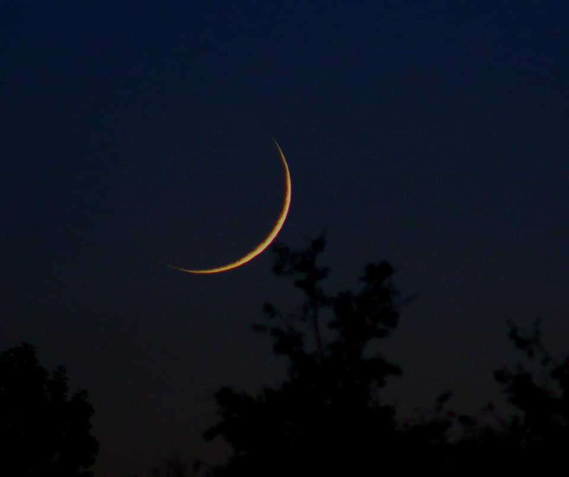
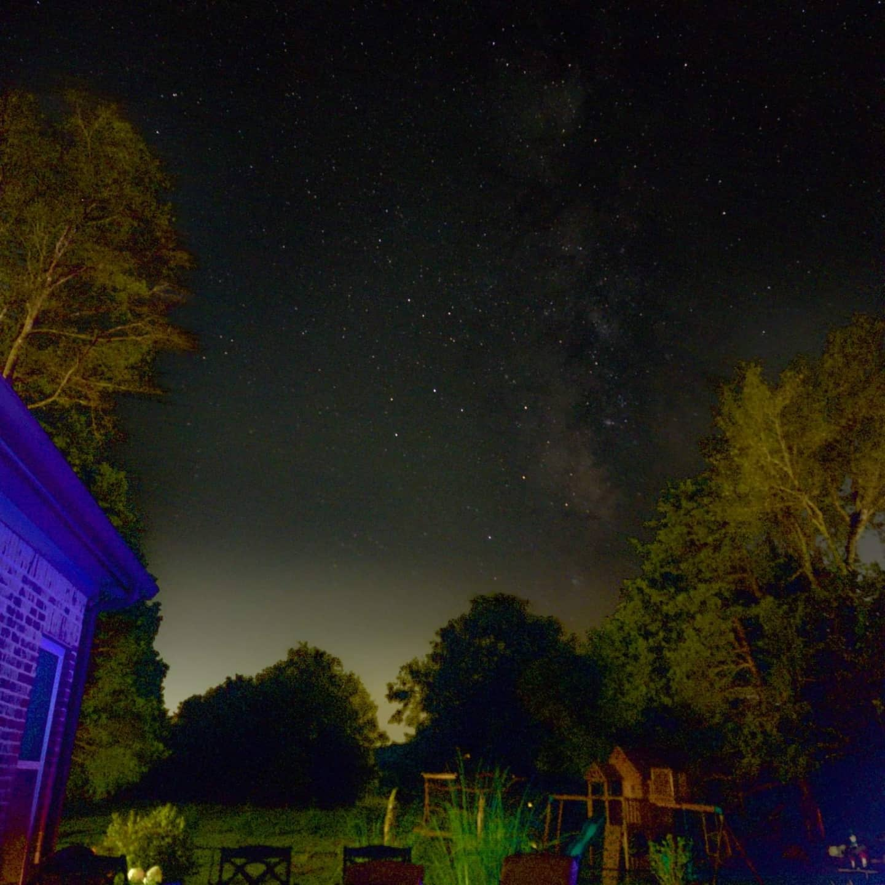
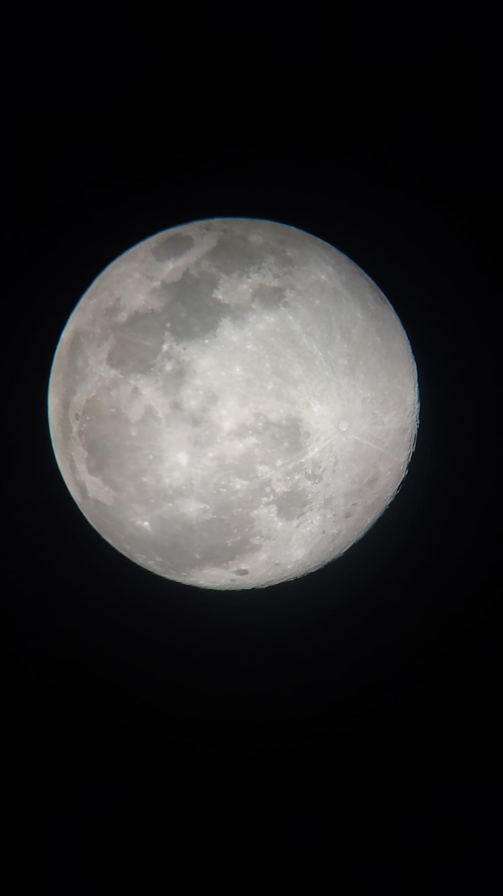
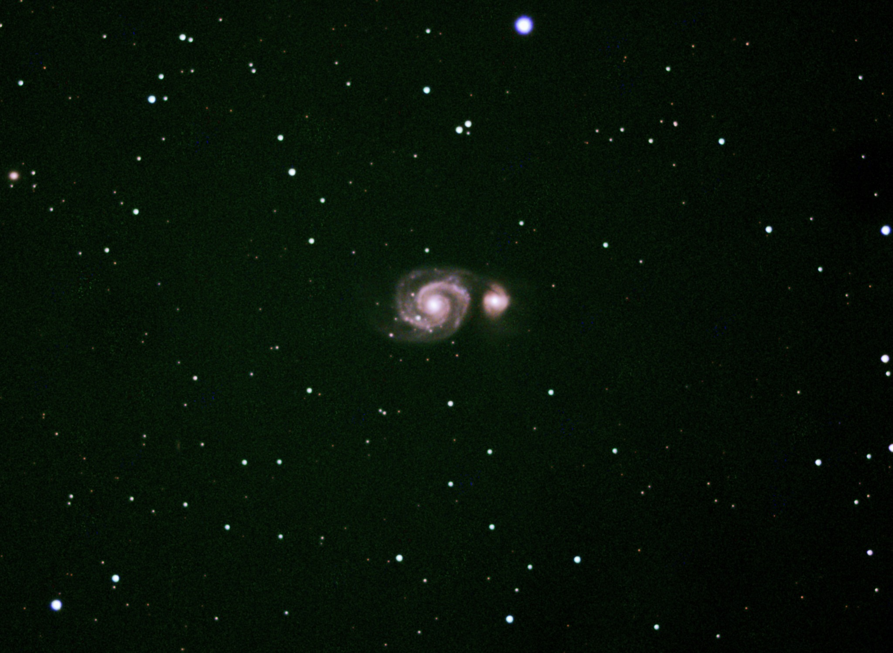
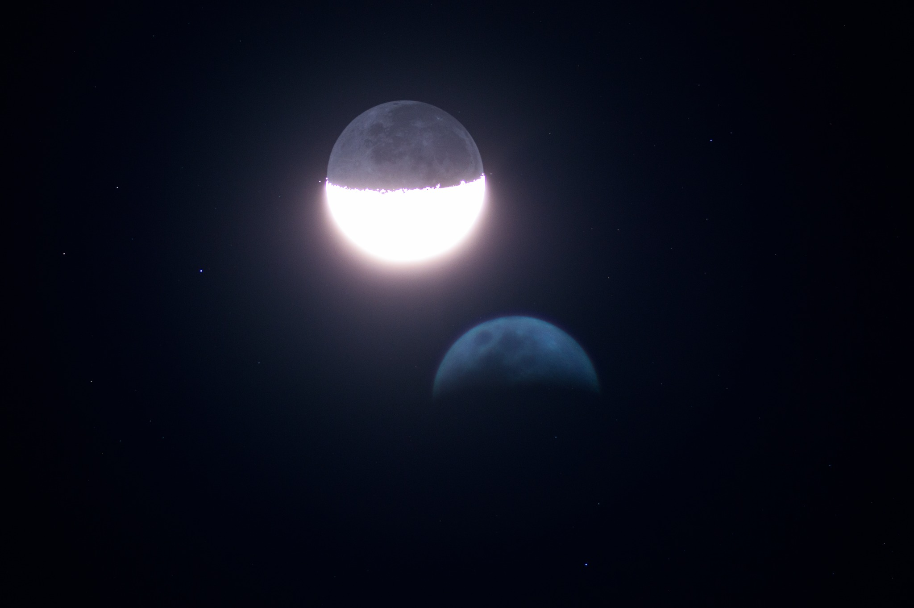

The Tennessee Night Sky — A Collection by Gary McDermott
A collection of deep-sky objects, lunar scenes, aurora, and wide-field Milky Way images captured under Tennessee skies.
All images by Gary McDermott · Gear and locations listed on the final page.
The Great Orion Nebula (M42)
A vast stellar nursery in the constellation Orion, the Great Orion Nebula is a bright emission nebula about 1,300 light-years away. It is filled with glowing hydrogen gas, dark dust lanes, and young, hot stars—including the Trapezium Cluster—making it one of the most studied and photographed regions in the sky.

The Horsehead and Flame Nebula Hα Emissions
This dramatic region in Orion showcases the dark silhouette of the Horsehead Nebula (Barnard 33) against the red hydrogen glow of IC 434, alongside the Flame Nebula (NGC 2024). Ultraviolet radiation from nearby massive stars energizes the gas, revealing intricate filaments and dust structures.

Thin Crescent Moon Hanging Above the Treetops in the Western Sky
A young crescent Moon glows low in the western sky after sunset, with only a slim portion of its surface illuminated. The silhouetted treetops anchor the scene to Earth, while the Moon’s delicate arc marks the beginning of a new lunar cycle.

A Night-Sky Landscape Showing the Milky Way Rising Over the Treeline
The Milky Way’s dense star clouds and dark dust lanes rise above a forested horizon. This wide-field landscape highlights the structure of our home galaxy as seen from within, emphasizing the contrast between Earth’s quiet foreground and the vast stellar backdrop.

Milky Way from the Big City
Despite strong light pollution from a suburban environment, the central band of the Milky Way still pushes through the skyglow. Capturing such detail under bright conditions requires careful technique and reveals how resilient the galaxy’s glow can be, even above city lights.

A Beautifully Thin, Golden Crescent Moon Dipping Low Over Silhouetted Trees
A warm, golden crescent Moon sets behind dark treetops, its curved edge lit just days after new moon. This fleeting phase is visible for only a short time each evening and is prized for its elegance and subtlety.

Wide-Field Milky Way Star Clouds
This wide-field view reveals mottled star clouds and dark rifts in the Milky Way. The bright regions mark dense concentrations of stars and nebulae in our galaxy’s spiral arms, while the darker patches are caused by foreground dust blocking starlight.

Twilight Over Still Water
The last warm hues of sunset fade over a calm, reflective landscape. This peaceful Earthbound scene complements the deep-sky images in the portfolio, reminding us that the beauty of the night sky is always framed by the world beneath it.

The Milky Way Rising Over the Backyard
A personal, intimate view of the Milky Way seen from a familiar backyard setting. Rooftops and trees silhouette against the starry glow, emphasizing how cosmic grandeur quietly hangs above everyday life.

The Milky Way Emerging Through the Darkness
A faint but ethereal Milky Way band rises through the darkness above shadowed treetops. The subtlety of the glow captures the quiet, patient side of night-sky observing under less-than-perfect conditions.

Full Moon in Crystal Clarity
A high-resolution telescopic view of the full Moon reveals cratered highlands, smooth lunar maria, and bright ray systems such as those emanating from Tycho Crater. The sharp detail showcases the Moon’s complex geology and long history of impacts.

The Whirlpool Galaxy and Its Companion
Messier 51 (the Whirlpool Galaxy) and its companion NGC 5195 form an interacting galaxy pair about 27 million light-years away. The Whirlpool’s grand-design spiral arms and the tidal bridge connecting it to its neighbor make this one of the most iconic deep-sky targets.

The Whirlpool Galaxy — Raw Capture
A softer, early-processing view of the Whirlpool Galaxy (M51) and its companion. Even in this less-refined state, the galaxy’s spiral structure and interaction with NGC 5195 are clearly visible.

Milky Way Between the Houses
A monochrome nightscape shows the Milky Way rising between suburban houses. The bright foreground lights and faint galactic band create a striking contrast between human-made illumination and the soft glow of the galaxy.

Backyard Milky Way in Full Color
A vivid long-exposure capture of the Milky Way arching above rooftops and trees. The colorful star fields and dust lanes of the galactic core contrast with the warm artificial lighting of the neighborhood below.

Jupiter and Its Cloud Bands
A telescopic image of Jupiter reveals its parallel cloud bands, created by powerful jet streams in the planet’s thick atmosphere. These stripes consist of ammonia clouds at different altitudes and temperatures, shaped by Jupiter’s rapid rotation.

Wide-Field View of the Orion Nebula and Running Man Nebula
This wide-field capture showcases the bright Orion Nebula (M42) along with the nearby Running Man Nebula. Together they form part of a large star-forming complex in Orion, rich with young stars, glowing gas, and intricate dust structures.

22° Lunar Halo in Thin Ice Clouds
A 22-degree halo encircles the Moon, produced when moonlight is refracted by hexagonal ice crystals in high-altitude cirrostratus clouds. The consistent refraction angle creates a near-perfect ring, often seen ahead of incoming weather fronts.

Bode’s Galaxy and the Cigar Galaxy
This field features M81 (Bode’s Galaxy), a bright spiral galaxy, and M82 (the Cigar Galaxy), an edge-on starburst galaxy. Located about 12 million light-years away in Ursa Major, their gravitational interaction has stirred intense star formation in M82.

Markarian’s Chain – Galaxies of the Virgo Cluster
A wide-field portrait of Markarian’s Chain, a graceful arc of galaxies that forms part of the Virgo Cluster.
First noted by astronomer Benjamin Markarian, the chain includes bright elliptical galaxies such as M84 and M86,
along with many smaller island universes scattered across the frame.

The Northern Lights Over Tennessee
A rare display of the aurora borealis drifting over Tennessee, painting the sky with soft curtains of magenta and green. Driven by a powerful geomagnetic storm, these colors form when charged particles from the Sun collide with oxygen and nitrogen high in Earth’s atmosphere. Seeing the northern lights this far south is an extraordinary event and a reminder of how dynamic our sky can be.

The Northern Lights Over Tennessee — Alternate View
A second perspective from the same auroral storm: soft green and magenta light spreads across the sky while power lines and trees frame the scene. A surreal blend of everyday Tennessee suburbia and polar skyfire over the American South. Wiki: Strong geomagnetic storms can push auroras much farther south than usual, making rare displays visible from mid-latitude locations.

The Heart of the Orion Nebula (M42)
A close-up view of the brilliant core of the Orion Nebula, where the Trapezium Cluster of young, massive stars blasts the surrounding gas with intense radiation. This energy sculpts the glowing clouds and carves out dark cavities, revealing one of the nearest and most detailed examples of ongoing star formation in our galaxy.

Earthshine and the Crescent Moon
A striking view of a young crescent Moon with its sunlit edge blazing bright while the rest of the lunar disk glows softly with earthshine—sunlight reflected from Earth back onto the Moon. An internal reflection in the optics creates a faint ghost image below, giving the impression of a double Moon and adding a surreal, dreamlike quality to the scene.

The Triangulum Galaxy (M33)
The Triangulum Galaxy (M33) is a graceful face-on spiral about 2.7 million light-years away and a key member of our Local Group. Its loose, open arms are filled with star-forming regions and glowing nebulae, with knots of young blue stars scattered throughout. Long-exposure imaging reveals its delicate structure and sprawling size—nearly 60,000 light-years across.

The Western Veil Nebula – The Witch’s Broom
The Western Veil Nebula (NGC 6960), often called the Witch’s Broom, marks the western edge of the Cygnus Loop supernova remnant. This long, sweeping filament traces the shock front from a massive star that exploded thousands of years ago, with ionized oxygen glowing blue-green and hydrogen glowing deep red against the rich background star field.

The Eastern Veil Nebula – Filaments of an Ancient Supernova
The Eastern Veil Nebula (NGC 6992/6995) forms the bright, filamentary eastern edge of the Cygnus Loop supernova remnant. Its intricate, overlapping wisps of ionized gas trace the expanding shockwave from the same ancient stellar explosion, with teal oxygen and red hydrogen emissions revealing the fine structure of the blast as it tears through the interstellar medium.

The Eagle Nebula (Pillars of Creation)
The Eagle Nebula (Messier 16) is a young open cluster of stars embedded in a cloud of interstellar gas and dust located about 7,000 light-years away in the constellation Serpens. Its most famous feature—the Pillars of Creation—is a towering structure of dense molecular gas sculpted by intense ultraviolet radiation from nearby massive stars. These pillars are active star‑forming regions where new suns are born inside collapsing knots of gas and dust. First imaged famously by the Hubble Space Telescope, the Pillars remain one of the most iconic astrophotography subjects in the sky.

Helix Nebula (NGC 7293)
A detailed look at the Helix Nebula, a planetary nebula in the constellation Aquarius formed from the expelled outer layers of a dying Sun-like star. Often nicknamed the Eye of God, it lies about 650 light-years away and is one of the closest and most studied examples of how stars like our Sun end their lives. Wiki: The Helix Nebula (NGC 7293) is a large planetary nebula and represents a late evolutionary phase of a low-mass star, whose exposed core will eventually cool into a white dwarf.

Gear & Locations
Primary imaging location: Murfreesboro, Tennessee, USA (suburban Bortle 6–7 skies).
Deep-Sky Imaging Rig:
- SVBONY SV503 80ED apochromatic refractor
- 0.8× field flattener/reducer
- SVBONY SV705C main imaging camera
- SVBONY SV165 Mini Guide Scope (30mm f/4)
- SVBONY SV305 guide camera
- Sky-Watcher Star Adventurer GTi tracking mount
Wide-Field Imaging Rig:
- Nikon D3200 DSLR
- Star Adventurer 2i tracking mount
- Assorted Nikon lenses for Milky Way, aurora, and wide-field sky work
Processing Workflow:
- DeepSkyStacker (DSS) for calibration and stacking
- Siril for gradient removal, color calibration, stretching, and finishing touches
Most images were captured from my backyard or nearby fields, working through light pollution to reveal the hidden structure of the night sky.